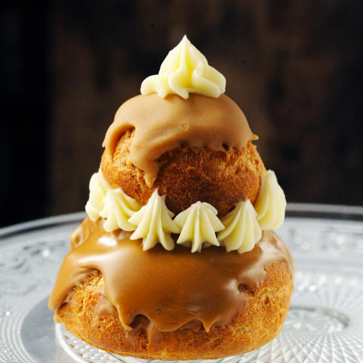

Religieuse

Description
La recette est la même que pour l'éclair hormis la présentation.
La religieuse est composée de deux choux posés l'un sur l'autre, dont le chou supérieur, qui est censé représenter la tête, est deux fois plus petit.
Ingredients
Pour la pâte à choux
- Eau : 1/4L
- Beurre : 100g
- Sel : une pincée
- Farine : 200g
- Oeufs : 4
Pour la crème patissière
- Jaunes d'oeufs : 3
- Maïzena : 20g
- Lait : 1/2L
- Sel : une pincée
- Sucre : 90g
- Farine : 30g
- Chocolat : 100g
Pour le glaçage
- Chocolat : 100g
- Sucre : 15g
- Lait 2 c à s
Steps
- Pour la pâte à choux : verser l'eau, le sel et le beurre dans une casserole. Porter à ébullition. Hors du feu, verser la farine. Bien mélanger. La pâte doit se détacher de la paroi.
Incorporer un à un les œufs, tout en prenant le soin de bien mélanger à chaque fois. Préparer une plaque beurrée et sulfurisée, puis y déposer 6 grosses boules de pâte pour la base de la religieuse,
puis 6 boules plus petites pour les têtes. Faire cuire 30 minutes à 180°C (thermostat 6). Une fois bien dorées et cuites, les laisser refroidir.
- Pour la crème au beurre : mélanger dans une casserole le sucre avec un peu d'eau. Porter à ébullition. Il doit se former un sirop de sucre. Dans un saladier, battre les jaunes d'œufs puis ajouter le sirop.
Battre jusqu'à ce que ce soit froid. Ajouter ensuite le beurre peu à peu au batteur électrique. On doit obtenir une crème lisse. Mettre au congélateur pour qu'elle durcisse un peu.
- Pour la crème pâtissière au chocolat : faire bouillir le lait et le chocolat dans une casserole. Dans un saladier, mélanger les jaunes d'œufs et le sucre. Puis ajouter la farine, la Maïzena et le sel. Délayer avec le lait au chocolat. Puis remettre dans la casserole sur feu doux. La préparation doit épaissir. Puis retirer du feu et laisser refroidir.
- Remplissage et glaçage : faire un trou dans chaque chou, puis garnir de crème pâtissière grâce à une poche à douille. Réaliser le glaçage en mettant à fondre le chocolat avec le lait et le sucre glace. Napper le dessus de chaque chou. Puis les assembler entre eux.
- Mettre la crème au beurre dans la poche à douille et décorer les religieuses à votre goût.
Back to the Menu